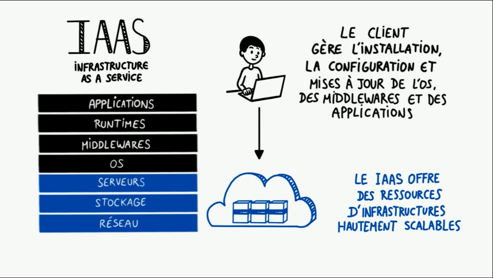
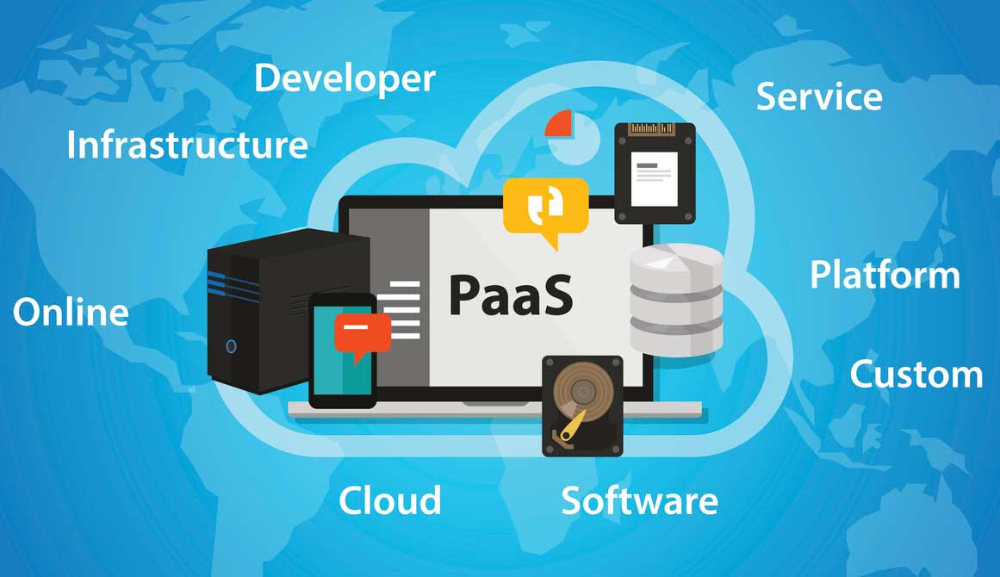
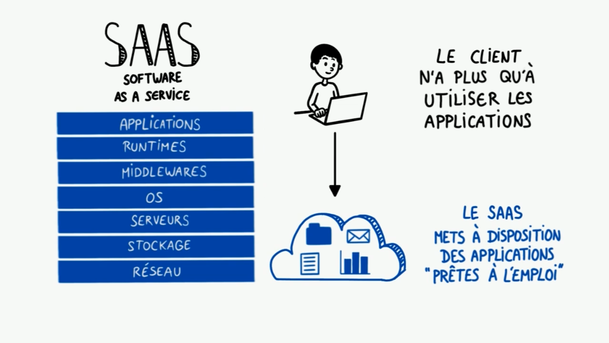

Cloud Computing
Pour simplifier, le cloud computing est la fourniture de services informatiques (notamment des serveurs, du stockage, des bases de données, la gestion réseau, des logiciels, des outils d’analyse, l’intelligence artificielle) via Internet (le cloud) dans le but d’offrir une innovation plus rapide, des ressources flexibles et des économies d’échelle. En règle générale, vous payez uniquement les services cloud que vous utilisez (réduisant ainsi vos coûts d’exploitation), gérez votre infrastructure plus efficacement et adaptez l’échelle des services en fonction des besoins de votre entreprise.
Pricipaux avantages du Cloud Computing
Le cloud computing est radicalement différent de l’approche traditionnelle que les entreprises adoptent en matière de ressources informatiques. Voici sept raisons courantes pour lesquelles les organisations optent pour des services de cloud computing :
Coût
Vitesse
Mise à l'échelle mondiale
Productivité
Performances
Fiabilité
Sécurité
Type de cloud computing
Tous les clouds ne sont pas identiques et aucun type de cloud computing ne convient à tout le monde. Plusieurs modèles, types et services différents ont évolué pour vous aider à trouver la solution adaptée à vos besoins.
Cloud public
Cloud privé
Cloud hybride
Types de services cloud : IaaS, PaaS et SaaS
La plupart des services de cloud computing peuvent être classés en trois grandes catégories : IaaS (infrastructure as a service), PaaS (platform as a service) et SaaS (software as a service). On les appelle parfois « pile » de cloud computing, car elles s’empilent les unes sur les autres.
IaaS (infrastructure as a service)
La catégorie la plus basique des services de cloud computing. Avec l’IaaS, vous louez une infrastructure informatique (serveurs, machines virtuelles, stockage, réseaux, systèmes d’exploitation) auprès d’un fournisseur de services cloud, avec un paiement en fonction de l’utilisation.

PaaS (platform as a service)
L’expression plateforme en tant que service (PaaS, Platform-as-a-Service) qualifie les services de cloud computing qui offrent un environnement à la demande pour développer, tester, fournir et gérer des applications logicielles. PaaS est conçu pour permettre aux développeurs de créer rapidement des applications web ou mobiles sans avoir à se préoccuper de la configuration ou de la gestion de l’infrastructure de serveurs, de stockage, de réseau et de bases de données nécessaire au développement.

SaaS (software as a service)
Le logiciel en tant que service (SaaS, Software-as-a-Service) est une méthode de diffusion d’applications logicielles via Internet, à la demande et en général sur abonnement. Avec le SaaS, les fournisseurs de services cloud hébergent et gèrent les applications logicielles et l’infrastructure sous-jacente, et gèrent la maintenance, par exemple la mise à niveau des logiciels et l’application des correctifs de sécurité. Les utilisateurs se connectent à l’application via Internet, en général par l’intermédiaire d’un navigateur web sur leur téléphone, leur tablette ou leur PC. Nous mettrons l'accent sur le SaaS dans ce élément.

Utilisation du Cloud Computing
Vous trouverez ici quelques exemples des possibilités d’utilisation des services cloud d’un fournisseur de cloud :
Créez des applications cloud natives
Tester et générer des applications
Stocker, sauvegarder et récupérer des données
Analyser des données
Diffuser du contenu audio et vidéo
Incorporer de l’intelligence
Diffuser des logiciels à la demande